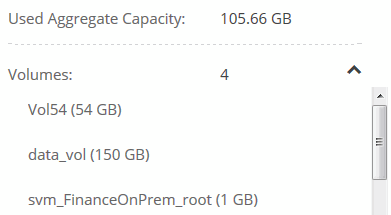

Go to the docs for the latest release.
Managing existing storage
Contributors
 Download PDF of this page
Download PDF of this page
Cloud Manager enables you to manage volumes, aggregates, and CIFS servers. It also prompts you to move volumes to avoid capacity issues.
Managing existing volumes
You can manage existing volumes as your storage needs change. You can view, edit, clone, restore, and delete volumes.
-
On the Working Environments page, double-click the Cloud Volumes ONTAP working environment on which you want to manage volumes.
-
Manage your volumes:
Task Action View information about a volume
Select a volume, and then click Info.
Edit a volume (read-write volumes only)
-
Select a volume, and then click Edit.
-
Modify the volume’s Snapshot policy, NFS access control list, or share permissions, and then click Update.
Clone a volume
-
Select a volume, and then click Clone.
-
Modify the clone name as needed, and then click Clone.
This process creates a FlexClone volume. A FlexClone volume is a writable, point-in-time copy that is space-efficient because it uses a small amount of space for metadata, and then only consumes additional space as data is changed or added.
To learn more about FlexClone volumes, see the ONTAP 9 Logical Storage Management Guide.
Restore data from a Snapshot copy to a new volume
-
Select a volume, and then click Restore from Snapshot copy.
-
Select a Snapshot copy, enter a name for the new volume, and then click Restore.
Create a Snapshot copy on demand
-
Select a volume, and then click Create a Snapshot copy.
-
Change the name, if needed, and then click Create.
Get the NFS mount command
-
Select a volume, and then click Mount Command.
-
Click Copy.
Change the underlying disk type
-
Select a volume, and then click Change Disk Type & Tiering Policy.
-
Select the disk type, and then click Change.
Cloud Manager moves the volume to an existing aggregate that uses the selected disk type or it creates a new aggregate for the volume. Change the tiering policy
-
Select a volume, and then click Change Disk Type & Tiering Policy.
-
Click Edit Policy.
-
Select a different policy and click Change.
Cloud Manager moves the volume to an existing aggregate that uses the selected disk type with tiering, or it creates a new aggregate for the volume. Enable or disable sync to S3 for a volume
Select a volume and then click Sync to S3 or Delete Sync Relationship.
The sync to S3 feature must be enabled before you can use these options. For instructions, see Syncing data to AWS S3 Delete a volume
-
Select a volume, and then click Delete.
-
Click Delete again to confirm.
-
Managing existing aggregates
If you want to manage existing aggregates yourself, you can add disks to aggregates, view information about aggregates, and delete them.
If you want to delete an aggregate, you must have first deleted the volumes in the aggregate.
If an aggregate is running out of space, you can move volumes to another aggregate by using OnCommand System Manager.
-
On the Working Environments page, double-click the Cloud Volumes ONTAP working environment on which you want to manage aggregates.
-
Click the menu icon and then click Advanced > Advanced allocation.
-
Manage your aggregates:
Task Action View information about an aggregate
Select an aggregate and click Info.
Create a volume on a specific aggregate
Select an aggregate and click Create volume.
Add disks to an aggregate
-
Select an aggregate and click Add AWS disks or Add Azure disks.
-
Select the number of disks that you want to add and click Add.
Delete an aggregate
-
Select an aggregate that does not contain any volumes and click Delete.
-
Click Delete again to confirm.
-
Modifying the CIFS server
If you change your DNS servers or Active Directory domain, you need to modify the CIFS server in Cloud Volumes ONTAP so that it can continue to serve storage to clients.
-
From the working environment, click the menu icon and then click Advanced > CIFS setup.
-
Specify settings for the CIFS server:
Task Action DNS Primary and Secondary IP Address
The IP addresses of the DNS servers that provide name resolution for the CIFS server.
The listed DNS servers must contain the service location records (SRV) needed to locate the Active Directory LDAP servers and domain controllers for the domain that the CIFS server will join.Active Directory Domain to join
The FQDN of the Active Directory (AD) domain that you want the CIFS server to join.
Credentials authorized to join the domain
The name and password of a Windows account with sufficient privileges to add computers to the specified Organizational Unit (OU) within the AD domain.
CIFS server NetBIOS name
A CIFS server name that is unique in the AD domain.
Organizational Unit
The organizational unit within the AD domain to associate with the CIFS server. The default is CN=Computers.
DNS Domain
The DNS domain for the Cloud Volumes ONTAP storage virtual machine (SVM). In most cases, the domain is the same as the AD domain.
-
Click Save.
Cloud Volumes ONTAP updates the CIFS server with the changes.
Moving a volume to avoid capacity issues
Cloud Manager might display an Action Required message that says moving a volume is necessary to avoid capacity issues, but that it cannot provide recommendations to correct the issue. If this happens, you need to identify how to correct the issue and then move one or more volumes.
-
Based on your analysis, move volumes to avoid capacity issues:
Identifying how to correct capacity issues
If Cloud Manager cannot provide recommendations for moving a volume to avoid capacity issues, you must identify the volumes that you need to move and whether you should move them to another aggregate on the same system or to another system.
-
View the advanced information in the Action Required message to identify the aggregate that has reached its capacity limit.
For example, the advanced information should say something similar to the following: Aggregate aggr1 has reached its capacity limit.
-
Identify one or more volumes to move out of the aggregate:
-
In the working environment, click the menu icon, and then click Advanced > Advanced allocation.
-
Select the aggregate, and then click Info.
-
Expand the list of volumes.

-
Review the size of each volume and choose one or more volumes to move out of the aggregate.
You should choose volumes that are large enough to free space in the aggregate so that you avoid additional capacity issues in the future.
-
-
If the system has not reached the disk limit, you should move the volumes to an existing aggregate or a new aggregate on the same system.
For details, see Moving volumes to another aggregate to avoid capacity issues.
-
If the system has reached the disk limit, do any of the following:
-
Delete any unused volumes.
-
Rearrange volumes to free space on an aggregate.
For details, see Moving volumes to another aggregate to avoid capacity issues.
-
Move two or more volumes to another system that has space.
For details, see Moving volumes to another system to avoid capacity issues.
-
Moving volumes to another system to avoid capacity issues
You can move one or more volumes to another Cloud Volumes ONTAP system to avoid capacity issues. You might need to do this if the system reached its disk limit.
You can follow the steps in this task to correct the following Action Required message:
Moving a volume is necessary to avoid capacity issues; however, Cloud Manager cannot perform this action for you because the system has reached the disk limit.
-
Identify a Cloud Volumes ONTAP system that has available capacity, or deploy a new system.
-
Drag and drop the source working environment on the target working environment to perform a one-time data replication of the volume.
For details, see Replicating data between systems.
-
Go to the Replication Status page, and then break the SnapMirror relationship to convert the replicated volume from a data protection volume to a read/write volume.
For details, see Managing data replication schedules and relationships.
-
Configure the volume for data access.
For information about configuring a destination volume for data access, see the ONTAP 9 Volume Disaster Recovery Express Guide.
-
Delete the original volume.
For details, see Managing existing volumes.
Moving volumes to another aggregate to avoid capacity issues
You can move one or more volumes to another aggregate to avoid capacity issues.
You can follow the steps in this task to correct the following Action Required message:
Moving two or more volumes is necessary to avoid capacity issues; however, Cloud Manager cannot perform this action for you.
-
Verify whether an existing aggregate has available capacity for the volumes that you need to move:
-
In the working environment, click the menu icon, and then click Advanced > Advanced allocation.
-
Select each aggregate, click Info, and then view the available capacity (aggregate capacity minus used aggregate capacity).

-
-
If needed, add disks to an existing aggregate:
-
Select the aggregate, and then click Add disks.
-
Select the number of disks to add, and then click Add.
-
-
If no aggregates have available capacity, create a new aggregate.
For details, see Creating aggregates.
-
Use System Manager or the CLI to move the volumes to the aggregate.
-
In most situations, you can use System Manager to move volumes.
For instructions, see the ONTAP 9 Volume Move Express Guide.
 Edit on GitHub
Edit on GitHub